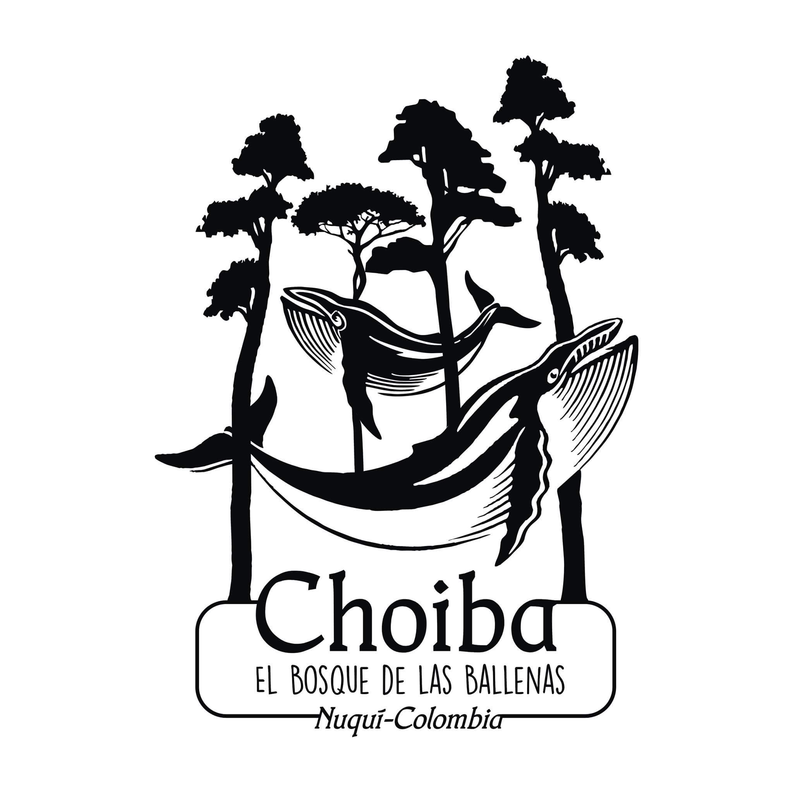
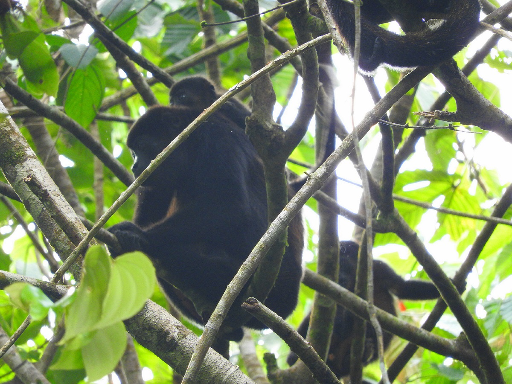

¿Quiénes Somos?
CHOIBÁ, EL BOSQUE DE LAS BALLENAS ES UN PORTAL DONDE LA NATURALEZA LIBERA TUS SENTIDOS.. (BE CONNECTED)
Choibá es un espacio privilegiado en el lugar más biodiverso del planeta, bosque húmedo tropical, aún sin tocar, protegido y escondido entre la serranía del Baudo y el océano Pacífico, selva amable, única, primaria, exuberante con más especies por metro cuadrado de la Tierra.
Bosque generoso y acogedor que ofrece infinidad de posibilidades por pequeños senderos que se adentran en él llevándonos a lugares pristinos con cascadas, ríos y charcos que invitan a bañarse, a soltar los lastres de la vida cotidiana, a Sentir la alegría de estar vivo, a experimentar el Aquí y el Ahora, A vaciar la mente. Lugar ideal para unas vacaciones, un retiro de luz y alegría en comunión con la naturaleza, espacio sin tiempo para desconectar del mundo exterior y conectar con nuestro centro. La naturaleza en todo su esplendor donde está inmerso Choiba, ayuda a esta conexión que comienza con la Madre Tierra y los demás elementos, agua, fuego y aire.
Lugar que invita a soñar
Dónde aprender a volar
Visitado todos los años de junio a septiembre por la gran y hermosa familia cetácea de luz de la Antártida. Es aquí que cada vuelta del sol vienen las hermanas ballenas desde el polo sur en un fabuloso viaje migratorio a traer sus ballenatos al mundo y aparearse.
Y es así que frente a Choiba el mar se llena de alegría y emoción, de saltos y chorros de agua al cielo, de golpes de cola que nos recuerdan q la vida debe ser un estado de celebración permanente, una maravillosa aventura. El alojamiento cómodo conduce a la tranquilidad, dos casas situadas sobre un acantilado con vistas al mar, una playa privada donde desemboca agua dulce, brisa que se lleva la plaga y los malos pensamientos, camas con mosquitero que aseguran un dulce sueño reparador con el concierto nocturno del bosque de fondo, hamacas y espacios encantadores con vista espectacular entre los gigantes y sabios seres verdes sobre el mar que nos convidan a leer, escribir, crear o simplemente contemplar. MEDITAR.
La alimentación rica y sana es propicia para desintoxicar el cuerpo, el silencio, el sonido del mar, del viento, de los pájaros, insectos y otros animales del bosque para descontaminar la mente y el alma. Todo ello facilitando el encuentro con uno mismo.
Para los que les gusta la acción Choiba cuenta con guías nativos de la región (indígenas y afro descendientes) para realizar fantásticas caminatas y paseos con diferentes grados de dureza y resistencia, También ofrece buceo con tanques o snorkeling, baños en aguas termales, surf y pesca, Y olas con qué jugar y revolcarse en la arena. Choiba es un mundo aparte donde dejar surgir el ser salvaje que todos llevamos dentro (y que tenemos completamente condicionado y olvidado), dónde atreverse a Ser sin máscaras, complejos ni tapujos, donde descansar y cargar energía, donde respirar Amor incondicional y celebrar el milagro de la vida en todas sus formas.
Alojamiento
El alojamiento cómodo conduce a la tranquilidad:
Dos casas situadas sobre un acantilado con vistas al mar, una playa privada donde desemboca agua dulce, brisa que se lleva la plaga y los malos pensamientos. Camas con mosquitero que aseguran un dulce sueño reparador con el concierto nocturno del bosque de fondo. Hamacas y espacios encantadores con vista espectacular entre los gigantes y sabios seres verdes sobre el mar que nos convidan a leer, escribir, crear. O simplemente contemplar. MEDITAR.
Alimentación
La alimentación rica y sana es propicia para desintoxicar el cuerpo.. El silencio, el sonido del mar, del viento, de los pájaros, insectos y otros animales del bosque para descontaminar la mente y el alma.. Todo ello facilitando el encuentro con uno mismo.
Buceo
Debido a la enorme riqueza del lecho marino, la región costera del Chocó, posee uno de los lugares más variados en fauna marina. Por esta razón es un sitio apetecido para buzos. Quienes deseen realizar cursos certificados de buceo o inmersiones contamos con la escuela, “Kakiri” que posee equipos modernos y profesionales expertos. Existen varios riscales para realizar esta práctica y la lancha con el instructor recoge a los huéspedes en Choibá Ecolodge.

Alquiler de Tablas de Surf
Por su emplazamiento Choibá ecolodge ofrece los mejores “spots” para surfistas con diferentes niveles de dificultad, desde playas planas con suaves olas para los novatos hasta olas de seis metros para expertos. Choibá ecolodge cuenta con varias tablas para alquiler y ofrece un curso de tres días con los mejores profesores locales como lo es Nestor Tello quien dirige la escuela de surf del Pacífico además de ser líder y organizador de una hermosa labor en la región. Es muy lindo encontrarse con niños y niñas de todas las edades disfrutando de las olas, jugando en el mar.
Avistamiento de Ballenas
Desde nuestras instalaciones es posible ver la fiesta de la cual nos hacen partícipe las ballenas Yubarta en los meses de junio a octubre. Grandes “splashs”, saltos que nos permiten ver todo su cuerpo fuera del agua, aletas, coletazos, columnas de vapor, chorros al aire y todo el ritual de cortejo del apareamiento; pero más emocionante es embarcarse desde Choibá para verlas y oírlas de cerca.. para sentir su majestuosidad. Nuestra política es siempre de respeto por estos amables gigantes del mar que viajan miles de kilómetros desde el sur del globo a parir sus ballenatos y aparearse en las aguas cálidas de nuestra orilla. Podemos sentir su presencia y conectar con su bella esencia, energía que sana. A veces, nos invitan a tirarnos al agua a escuchar sus hermosos conciertos.. Siempre nos regalan experiencias diferentes e inolvidables.
Caminatas con Guía Experto
Por su estratégica ubicación Choibá ecolodge ofrece una gran variedad de paseos; bellas caminatas recorriendo senderos, guiados por nuestro guía experto de la región, que nos conducen a un viaje increíble por ríos cristalinos, asombrosas cascadas, playas vírgenes .. todo ello ambientado por una exuberante e impactante fauna y flora que hemos clasificado por niveles de resistencia física.
* Caminata del Águila (nivel 1)
* Caminata cascada Bochorró
* Caminata a los termales (nivel 2)
* Caminata al río Arusicito (nivel 2)
* Excursión al salto del Arusicito (nivel 3)

Aguas Termales
Termales es uno de los corregimientos vecinos más pintoresco, muy bien cuidado y organizado por sus habitantes. Goza de unas piscinas con aguas calientes y azufradas en un “spa” selvático dentro del bosque a la orilla de un río a diez minutos de la playa donde está situada la escuela de surf que inspira y alegra la vida de los niños y adolescentes de la región. Proponemos dos maneras de llegar hasta ahí:
* Choibá - Termales -Choibá en bote
* Desde Choibá, caminando con nuestro guía hasta la cuchilla por la selva para descender hacia Arusí atravesando el ecosistema de manglar y cruzando los ríos Arusí y Arusicito para seguir por la playa hasta Termales (3 horas aproximadamente). Después de disfrutar de las aguas termales y una comida típica regreso a Choibá en bote.
Los dos planes incluyen entrada a los termales y almuerzo en el lugar.Snorkeling
Nuestro suelo marino en Choibá Ecolodge es rico en peces multicolores. Sumergiéndonos a poca profundidad se pueden observar ecosistemas subacuáticos de gran variedad.
“Un Lugar Mágico, simple y maravilloso, para despertar los sentidos, en sincronía con la naturaleza. Tú con los elementos!!! El servicio maravilloso!!! Seres de Luz!!! ”
“The Pacific ocean meets the jungle, and they're both full of wonders! This place is a vortex of energy that one owes oneself to experience. paradise must have been like this before we f**ked it up. Top natch hospitality! Loved it. It help me see the world in a different way when I came back.”
“I cannot begin to put into words the experience that we had a Choiba. We had amazing adventures in the forest. Thrilling action on the high seas. Delicious food, and the property is incredible. The lodging and amenities completely surpassed my imagination for what could exist out in the jungle. Nataly and Claudia are incredible hosts.”
“ A place of an extreme natural beauty inhabited by very competent landlords, cordial neighbours and pristine nature. In addition, there is no malaria around - which makes Choibá Lodge a truly rare tropical paradise ”
“vale la pena descubrir una parte del universo que no está invadida aun por el sistema masivo de consumo en turismo....”
“magia total con pacha mama y padre océano deseo de corazón visitar esa parte del planeta gracias por estar en mi gran y maravilloso país Colombia invito a todos mis contactos a conocer el paraíso en la tierra Gracias mil”
Turismo consciente y responsable
El turismo consciente es una experiencia transformadora que genera un crecimiento personal que nos ayuda ser mejores seres humanos. Este proceso se sustenta en los principios de sostenibilidad y ética promoviendo los valores de la armonía, la amistad, el respeto y el amor a la vida para conectar con nuestra esencia y despertar el amor incondicional fuera de toda programación externa. El volverse consciente respecto a algo es una decisión sobre una forma de vida y podemos pensarlo también desde el turismo. El manejo de los recursos naturales y culturales de manera responsable, el trato justo, digno y equitativo entre los seres humanos constituye un pacto de convivencia, responsabilidad, respeto y comunión con el entorno natural y cultural. El turismo consciente proporciona un espacio y un momento de acercamiento entre personas de distintos orígenes, contextos culturales, formas de entender el mundo exterior con los seres que habitan la biodiversidad de este bosque y el mar (ballenas, delfines, peces, árboles, plantas, mamíferos, insectos, pájaros, reptiles) en conexión con los 4 elementos ..fuego, tierra, agua y aire.
ES UNA EXPERIENCIA DE DAR Y RECIBIR!
